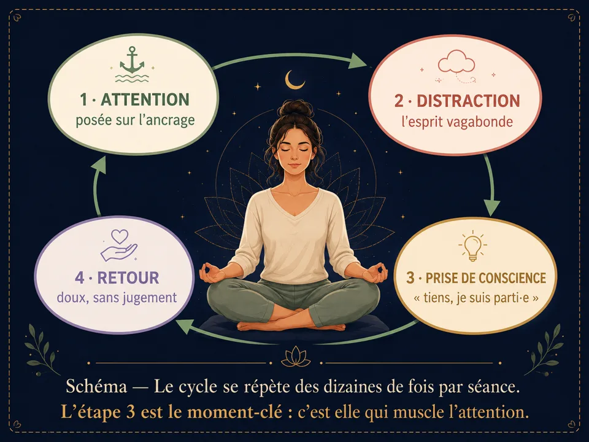

Apprendre à méditer : le guide du débutant
Qu'est-ce que méditer, pourquoi commencer, et les 5 idées reçues qui bloquent les débutants. Un guide simple et gratuit pour ta première méditation.
Tu veux apprendre à méditer mais tu ne sais pas par où commencer ? Ce guide du débutant reprend tout depuis le début : ce qu'est vraiment la méditation, ce qu'elle apporte au quotidien, et les idées reçues qui font abandonner. Aucun matériel, aucune dépense — juste ton attention et quelques minutes par jour.

Commencer ici
Qu'est-ce que méditer ?
Méditer, c'est entraîner son attention. Comme un muscle, l'attention se renforce par la répétition : on choisit un point d'ancrage (souvent la respiration), on remarque quand l'esprit s'échappe, et on le ramène doucement. C'est tout. Ce geste simple, répété des centaines de fois, transforme progressivement le rapport que l'on entretient avec ses pensées et ses émotions.
✅ La méditation, c'est…
- Un entraînement de l'attention, accessible à tous
- Observer ce qui se passe, sans juger
- Revenir encore et encore à son ancrage
- Une pratique laïque, validée par la recherche
❌ Ce n'est pas…
- « Faire le vide » ou arrêter de penser
- Une relaxation obligatoire (parfois on s'agite, c'est normal)
- Réservé aux personnes « zen » ou souples
- Une religion, ni une performance à réussir
Pourquoi méditer ? Les bienfaits
🧠 Mental
Meilleure concentration, recul face aux ruminations, clarté dans les décisions, mémoire de travail renforcée.
💗 Émotionnel
Baisse du stress et de l'anxiété, meilleure régulation des émotions, plus de patience et de bienveillance envers soi.
🌙 Corporel
Sommeil plus profond, tension artérielle apaisée, détente musculaire, respiration plus ample au quotidien.
Les 5 idées reçues qui bloquent les débutants
« Je n'y arrive pas, je pense tout le temps »
« Il faut méditer longtemps pour que ça serve »
« Il faut s'asseoir en lotus »
« Méditer, c'est se détendre »
« Je n'ai pas le temps »
Votre parcours dans cette bibliothèque
- Installez votre posture — le socle de toute pratique (section 2).
- Apprivoisez votre respiration — l'ancrage universel et les techniques respiratoires (section 3).
- Comprenez vos pensées — quoi faire quand l'esprit s'échappe (section 4).
- Explorez les techniques du menu — chaque fiche est autonome, avec niveau, durée et étapes guidées.
- Suivez le programme 4 semaines — un chemin balisé du tout premier jour à l'autonomie (section 5).
Envie de pratiquer plutôt que de lire ?
Tout ce que décrit cet article se pratique dans Awakening Minds, application de méditation gratuite : 195 méditations guidées en français — sommeil, respiration guidée, mondes immersifs — sans abonnement, sans publicité, sans compte, et tout fonctionne hors ligne.
✦ Découvrir l'application gratuite